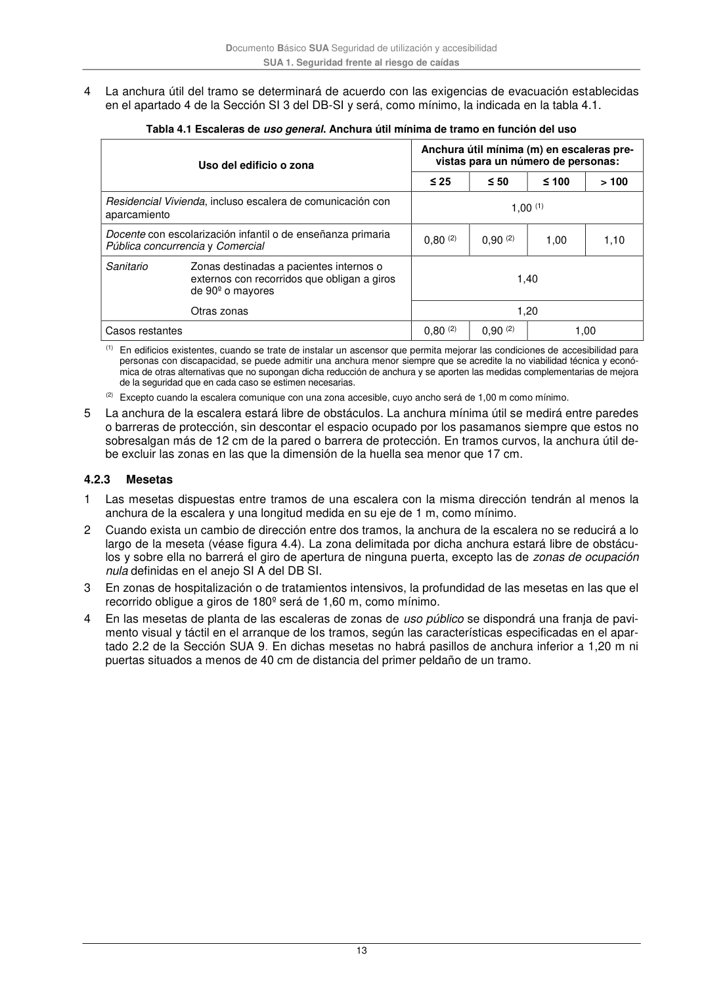

DB-SUA · 4.2.3 Mesetas · versión 2022-06-14
SHA256: 3cfb5bbb135e8f02faebd8b844e03e8947994c18d4c9e675a7d2aa37d1cd5958 · página física 13 de 47 · métodos de encabezado
solo si están cotejados.
Formatos: Markdown · JSON de bloques · PDF p. 13 · imagen PNG
Documento Básico SUA Seguridad de utilización y accesibilidad SUA 1. Seguridad frente al riesgo de caídas 13 4 La anchura útil del tramo se determinará de acuerdo con las exigencias de evacuación establecidas en el apartado 4 de la Sección SI 3 del DB-SI y será, como mínimo, la indicada en la tabla 4.1. Tabla 4.1 Escaleras de uso general. Anchura útil mínima de tramo en función del uso Uso del edificio o zona Anchura útil mínima (m) en escaleras pre- vistas para un número de personas: ≤ 25 ≤ 50 ≤ 100 > 100 Residencial Vivienda, incluso escalera de comunicación con aparcamiento 1,00 (1) Docente con escolarización infantil o de enseñanza primaria Pública concurrencia y Comercial 0,80 (2) 0,90 (2) 1,00 1,10 Sanitario Zonas destinadas a pacientes internos o externos con recorridos que obligan a giros de 90º o mayores 1,40 Otras zonas 1,20 Casos restantes 0,80 (2) 0,90 (2) 1,00 (1) En edificios existentes, cuando se trate de instalar un ascensor que permita mejorar las condiciones de accesibilidad para personas con discapacidad, se puede admitir una anchura menor siempre que se acredite la no viabilidad técnica y econó- mica de otras alternativas que no supongan dicha reducción de anchura y se aporten las medidas complementarias de mejora de la seguridad que en cada caso se estimen necesarias. (2) Excepto cuando la escalera comunique con una zona accesible, cuyo ancho será de 1,00 m como mínimo. 5 La anchura de la escalera estará libre de obstáculos. La anchura mínima útil se medirá entre paredes o barreras de protección, sin descontar el espacio ocupado por los pasamanos siempre que estos no sobresalgan más de 12 cm de la pared o barrera de protección. En tramos curvos, la anchura útil de- be excluir las zonas en las que la dimensión de la huella sea menor que 17 cm. 4.2.3 Mesetas 1 Las mesetas dispuestas entre tramos de una escalera con la misma dirección tendrán al menos la anchura de la escalera y una longitud medida en su eje de 1 m, como mínimo. 2 Cuando exista un cambio de dirección entre dos tramos, la anchura de la escalera no se reducirá a lo largo de la meseta (véase figura 4.4). La zona delimitada por dicha anchura estará libre de obstácu- los y sobre ella no barrerá el giro de apertura de ninguna puerta, excepto las de zonas de ocupación nula definidas en el anejo SI A del DB SI. 3 En zonas de hospitalización o de tratamientos intensivos, la profundidad de las mesetas en las que el recorrido obligue a giros de 180º será de 1,60 m, como mínimo. 4 En las mesetas de planta de las escaleras de zonas de uso público se dispondrá una franja de pavi- mento visual y táctil en el arranque de los tramos, según las características especificadas en el apar- tado 2.2 de la Sección SUA 9. En dichas mesetas no habrá pasillos de anchura inferior a 1,20 m ni puertas situados a menos de 40 cm de distancia del primer peldaño de un tramo.
